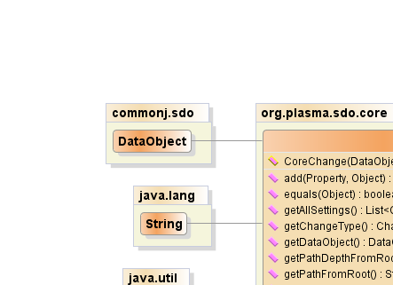
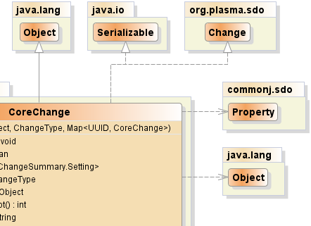
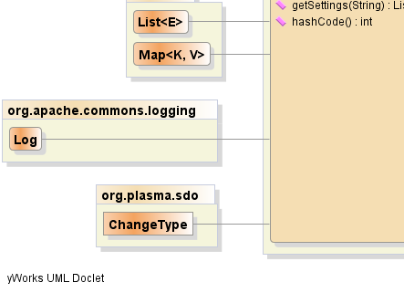
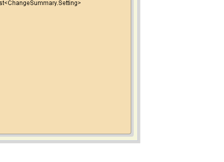

public class CoreChange extends java.lang.Object implements Change, java.io.Serializable
|  |  |
|  |  |
| Constructor and Description |
|---|
CoreChange(commonj.sdo.DataObject dataObject,
ChangeType changeType,
java.util.Map<java.util.UUID,CoreChange> changes) |
| Modifier and Type | Method and Description |
|---|---|
void |
add(commonj.sdo.Property property,
java.lang.Object value) |
boolean |
equals(java.lang.Object obj) |
java.util.List<commonj.sdo.ChangeSummary.Setting> |
getAllSettings() |
ChangeType |
getChangeType() |
commonj.sdo.DataObject |
getDataObject() |
int |
getPathDepthFromRoot() |
java.lang.String |
getPathFromRoot() |
java.util.List<commonj.sdo.ChangeSummary.Setting> |
getSettings(java.lang.String propertyName) |
int |
hashCode() |
public CoreChange(commonj.sdo.DataObject dataObject,
ChangeType changeType,
java.util.Map<java.util.UUID,CoreChange> changes)
public boolean equals(java.lang.Object obj)
equals in class java.lang.Objectpublic int hashCode()
hashCode in class java.lang.Objectpublic commonj.sdo.DataObject getDataObject()
getDataObject in interface Changepublic ChangeType getChangeType()
getChangeType in interface Changepublic java.util.List<commonj.sdo.ChangeSummary.Setting> getSettings(java.lang.String propertyName)
getSettings in interface Changepublic void add(commonj.sdo.Property property,
java.lang.Object value)
public java.util.List<commonj.sdo.ChangeSummary.Setting> getAllSettings()
getAllSettings in interface Changepublic java.lang.String getPathFromRoot()
getPathFromRoot in interface Changepublic int getPathDepthFromRoot()
getPathDepthFromRoot in interface ChangePlasmaSDO™ and PlasmaQuery™ are trademarks of TerraMeta Software, Inc. Copyright © 2011 - All Rights Reserved.